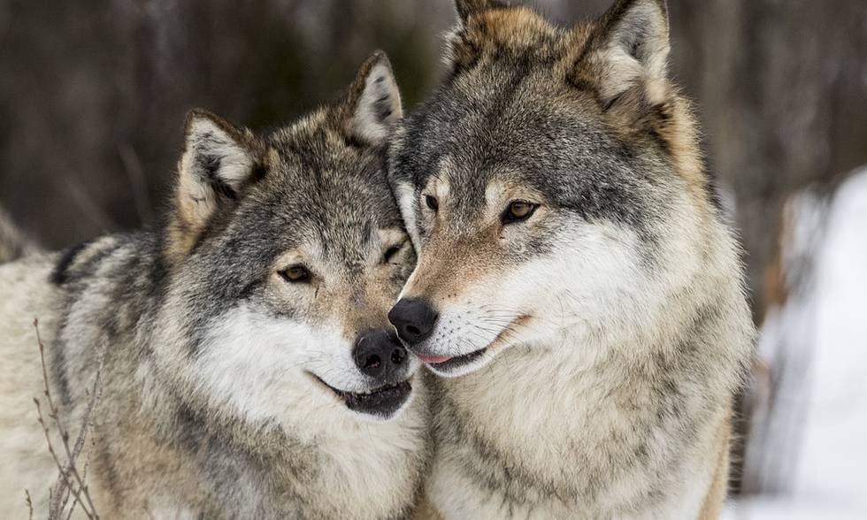

VARG
Utbredning & Utseende
Vargen trivs i de flesta miljöer, men förekommer i Sverige i fjäll- och skogsområden i Svealand och Norrland. Enstaka, strövande vargar kan ibland uppträda i södra Sverige. Det är oftast unga individer som lämnat den flock de föddes i för att söka en partner och etablera ett nytt revir. Skandinaviska och andra euroasiatiska vargar är grå, med grågula och rödbruna skiftningar i sommarpälsen, och mera grått i vinterpälsen. Det kan vara svårt att skilja en varg från en vargliknande hund, men vargar är oftast större än liknande hundar, till exempel jämthund. Skandinaviska vargar kännetecknas även av ljusare kind- och hakpartier. Dessa ljusa partier når aldrig över ögonen.
Föda & Beteende
Viktigaste födan är rådjur, ren och älg, men även bäver och småvilt ingår. Luktsinnet är känsligt – vargen kan vädra en älg på ett par kilometers avstånd. Vargen är mycket social och lekfull, och lever i flock hela året. Hemområdet (reviret) varierar mellan 0,5 och 15 kvadratmil och vargarna kan här vandra bortåt 3 mil varje dygn. Reviret makeras med urin och spillning.
Vargflocken
En vargflock består som regel av en familj med flera individer – ett reproducerande par och deras årsungar och fjolårsungar. Några äldre avkomlingar kan också finnas med i gruppen, liksom en släkting, ofta en bror eller syster, till någon i paret. Medlemmarna i flocken är alltså nära släkt med varandra. I flocken finns en social rangordning där föräldraparet har hög rang. Därefter är vargarna rangordnade ungefär efter sin ålder. När vargarna med tiden blir äldre kan rangordningen skiftas.
Läs Mer på NRM